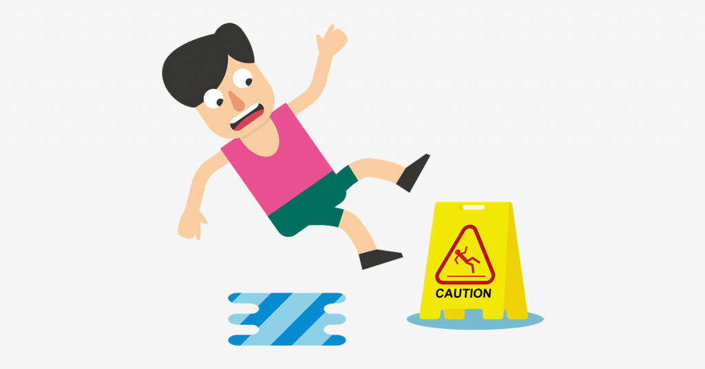

No mês de setembro de 2022 aconteceu dois acidentes, em área escolar, atropelamentos de jovens, uma menina foi acidentada e feriu a bacia e o outro faleceu com batida indo a caminho para escola.Com isto feriu muitas famílias, amigos e os mais próximos. As pessoas ficaram muito preocupadas, ouve choros, orações, gritos e desesperos, como ter uma prevenção para que possa acontece menos acidentes.Vamos prevenir, os motoristas têm que ter o senso que é um jovem ou poderia ser até uma criança sendo atropelada, tem que a ver respeito ao trânsito, evite o uso de celular, esteja em boas condições, manter distância segura, respeitar o limite de velocidade, antes de pisar no acelerador, considere que o limite de velocidade imposto em cada via não é por acaso.A coordenadora geral de Doenças e Agravos não Transmissíveis e Promoção da Saúde do Ministério da Saúde, Marta Silva, explica que os pais e responsáveis não devem deixar de acompanhar os filhos no momento da travessia. "Sempre que os pais ou responsáveis levarem a criança até a escola devem acompanhar a travessia da criança e essa travessia deve sempre ser feita na faixa de pedestre ou pelas calçadas. Orientamos também que não se pare em fila dupla. Isso aumenta o risco de acidentes envolvendo crianças. Quando os pais pararem o carro, também acompanhar a descida da criança do automóvel. Na prevenção dos atropelamentos com criança, alertamos os pais e responsáveis que eles têm que fazer a sua parte e proteger a criança, dentro do carro e fora do carro, de maneira segura.
